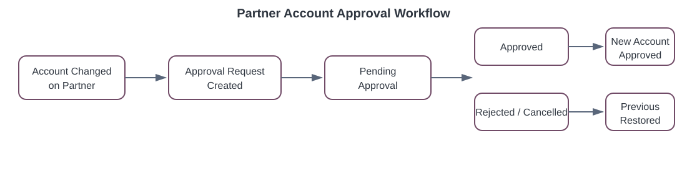
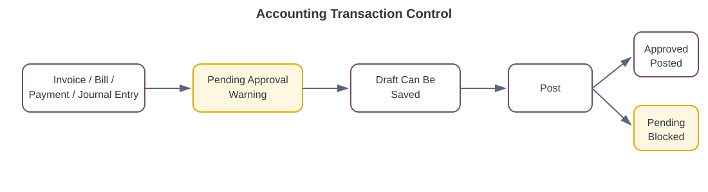

Controlled approval, audit history and posting enforcement for partner receivable and payable account changes in Odoo 17.
The module connects partner account changes to the standard Odoo Approvals app. It creates approval requests immediately, preserves approved account history, displays warnings on accounting transactions and prevents posting until the approval is resolved.
Independently enforce approval for customer receivable account changes.
Independently enforce approval for vendor payable account changes.
Track previous, proposed and approved accounts over time.
Allow draft preparation while blocking posting when approval is pending.
Company-specific configuration and allowed-company history access.
Log requested, approved, rejected and cancelled account changes.
Configure the workflow from either Accounting → Configuration → Settings or the company form.
| Setting | Purpose |
|---|---|
| Require Receivable Account Approval | Enable approval for customer receivable accounts. |
| Require Payable Account Approval | Enable approval for vendor payable accounts. |
| Approval Category | Select the standard Approvals category used by generated requests. |
| Blocking Scope | Choose whether to block only the pending account or all receivable/payable accounts for the partner. |
Create the request as soon as the account changes.
Delay only the new partner's first approval. Later changes are immediate.
Create the request from the next relevant transaction after every change.

Open a partner, select a new receivable or payable account and save.
The module creates an Approval Request immediately and records the proposed change.
Invoices, bills, payments and journal entries can still be saved as drafts.
Approve, reject or cancel the request. Posting remains blocked until resolution.

The proposed account becomes the latest approved account and posting restrictions are removed.
The latest approved account is restored and the rejection is recorded.
Cancellation restores the latest approved account when a rollback account exists.
Every account decision is retained in res.partner.account.approval.history. The partner form provides smart buttons for both Approval Requests and Account History.
| History Data | Recorded |
|---|---|
| Partner and company | Yes |
| Receivable/payable side | Yes |
| Previous and proposed account | Yes |
| Approval request and state | Yes |
| Requested/resolved user and date | Yes |